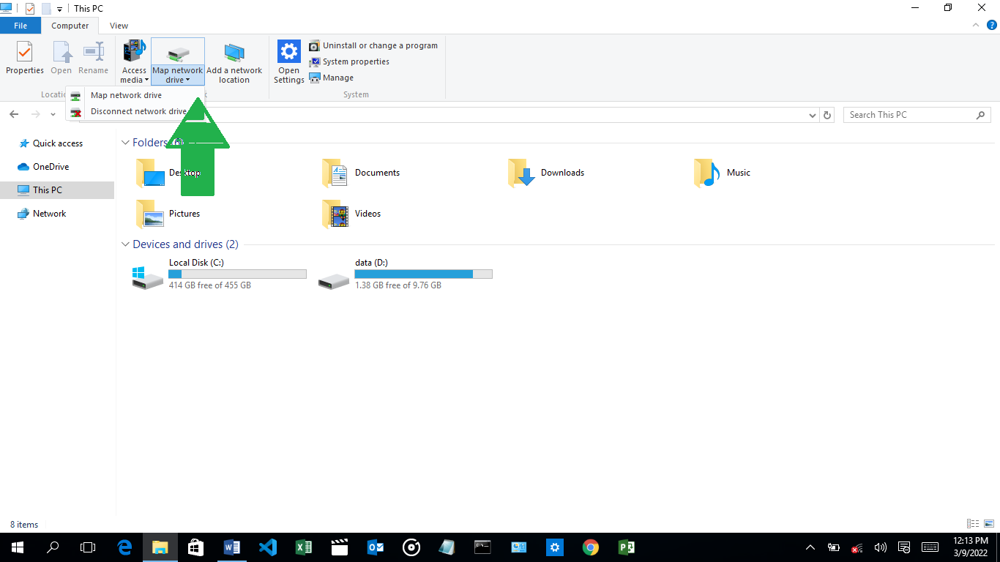
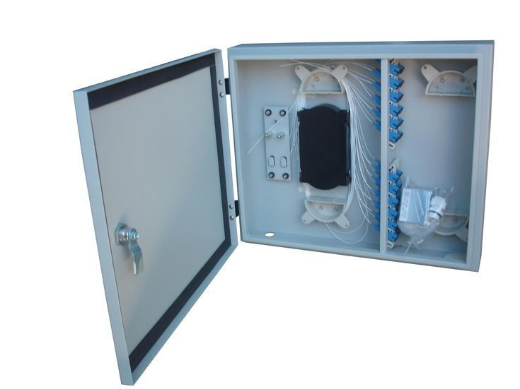
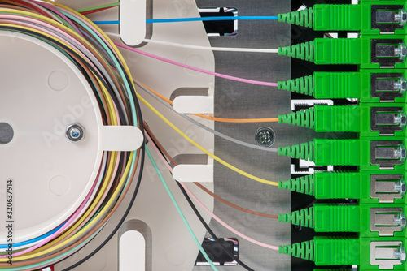
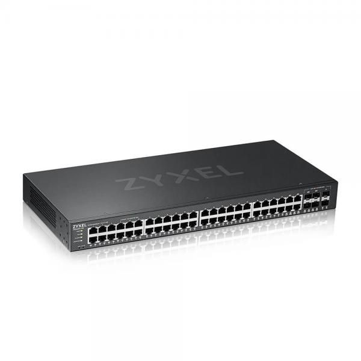
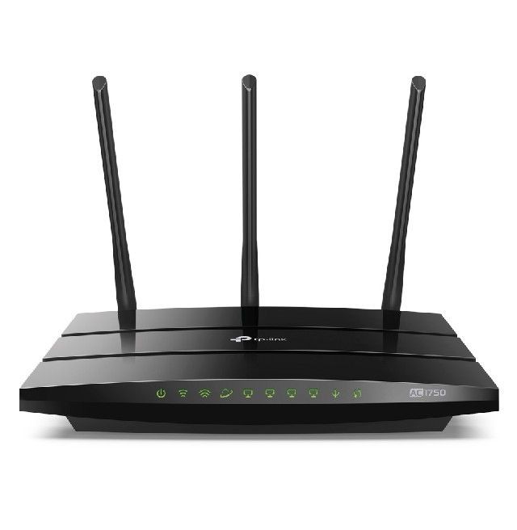
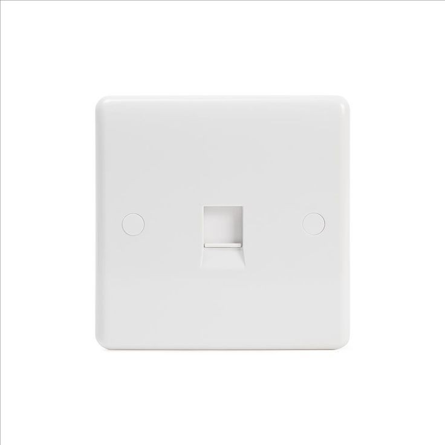
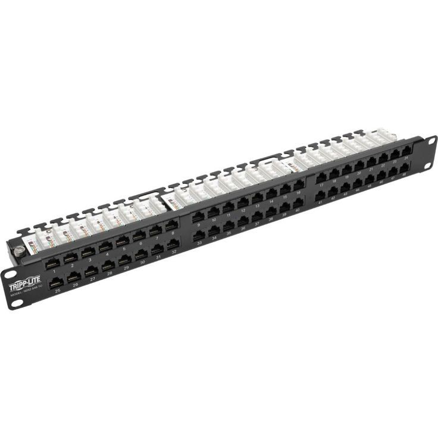

INTERNET PROTOCALS (IP).
An IP address is a unique address that identifies a device on the internet or a local network.
IP stands for "Internet Protocol," which is the set of rules governing the format of data sent via the internet or local network.
An IP address is a string of numbers separated by periods.
IP addresses are expressed as a set of four numbers — an example address might be 192.158.1.38. Each number in the set can range from 0 to 255.
So, the full IP addressing range goes from 0.0.0.0 to 255.255.255.255.
Types of IP addresses.
There are different categories of IP addresses, and within each category, different types.
Consumer IP addresses:
Every individual or business with an internet service plan will have two types of IP addresses;
their private IP addresses and their public IP address. The terms public and private relate to the network location — that is,
a private IP address is used inside a network, while a public one is used outside a network.
Private IP addresses:
Every device that connects to your internet network has a private IP address. This includes computers, smartphones, and tablets but also any Bluetooth-enabled devices like speakers, printers, or smart TVs
With the growing internet of things, the number of private IP addresses you have at home is probably growing. Your router needs a way to identify these items separately, and many items need a way to recognize each other. Therefore, your router generates private IP addresses that are unique identifiers for each device that differentiate them on the network.
Public IP addresses:
A public IP address is the primary address associated with your whole network.
While each connected device has its own IP address, they are also included within the main IP address for your network.
As described above, your public IP address is provided to your router by your ISP.
Typically, ISPs have a large pool of IP addresses that they distribute to their customers.
Your public IP address is the address that all the devices outside your internet network will use to recognize your network.
Public IP addresses:
Public IP addresses come in two forms;
- dynamic and static.
- Dynamic IP addresses:
Dynamic IP addresses
change automatically and regularly. ISPs buy a large pool of IP addresses and assign them automatically to their customers.
Periodically, they re-assign them and put the older IP addresses back into the pool to be used for other customers.
The rationale for this approach is to generate cost savings for the ISP.
Automating the regular movement of IP addresses means they don’t have to carry out specific actions to re-establish
a customer's IP address if they move home, for example......
There are security benefits, too, because a changing IP address makes it harder for criminals to hack into your network interface.
Static IP addresses:
In contrast to dynamic IP addresses, static addresses remain consistent. Once the network assigns an IP address, it remains the same. Most individuals and businesses do not need a static IP address, but for businesses that plan to host their own server, it is crucial to have one. This is because a static IP address ensures that websites and email addresses tied to it will have a consistent IP address — vital if you want other devices to be able to find them consistently on the web.
This leads to the next point – which is the two types of website IP addresses.
There are two types of website IP addresses
For website owners who don’t host their own server, and instead rely on a web hosting package,which is the case for most websites there are two types of website IP addresses. These are shared and dedicated.
- Shared IP addresses:
Websites that rely on shared hosting plans from web hosting providers will typically be one of many websites hosted on the same server. This tends to be the case for individual websites or SME websites, where traffic volumes are manageable, and the sites themselves are limited in terms of the number of pages, etc. Websites hosted in this way will have shared IP addresses.
- Dedicated IP addresses:
Some web hosting plans have the option to purchase a dedicated IP address (or addresses). This can make obtaining an SSL certificate easier and allows you to run your own File Transfer Protocol (FTP) server. This makes it easier to share and transfer files with multiple people within an organization and allow anonymous FTP sharing options. A dedicated IP address also allows you to access your website using the IP address alone rather than the domain name — useful if you want to build and test it before registering your domain.
How to troubleshoot a network printer.
- Press start button type cmd then enter.
- Type: net spooler.
- Or alternatively start button + button r then type service.MSc then right click.
How to turn an offline printer to online
- Press start menu.
- Type device and printer then enter.
- Under printer check mark for default.
- Right click printer properties.
- Select port default then configure port.
- Default port should be check marked.
- Under SNMP STATUS enable uncheck the box.
- Click ok.
- Restart the computer.

How to map a program into a drive.
- Go to file explorer.
- Click this PC- on the left side.
- At the taskbar click computer.
- Then click map network drive, follow the path by choosing map network drive.
- Choose the desired drive and folder.
- Then press finish.

TERMS IN NETWORKING
ODF
What Is ODF?
An optical distribution frame (ODF) is a frame used to provide cable interconnections between communication facilities, which can integrate fiber splicing, fiber termination,
fiber optic adapters & connectors and cable connections together in a single unit.

How a connection looks inside an ODF.

SWITCH
A switch is a device in a computer network that connects other devices together.
Multiple data cables are plugged into a switch to enable communication between different networked devices.

ROUTER
A router is a networking device that forwards data packets between computer networks.
Routers perform the traffic directing functions on the Internet.
sent through internet,such as web page or email,is in the form of data .

DATA POINT
location where ethernet cables can connect to various device.covered by wall plates to conceal jacks and wire
it make a home or office look tider than having cables run all over.

MEDIA CONVERTER
device designed to interconnect diffrent media such as fiber and coaxial cables to facilitate communication between them
it often comes in form of a small box where two difrent networking cables can run through it.

PATCH PANEL
container that provides network port to enable connectivity of device within LAN.

« previous